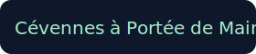

<!doctype html><html lang="fr"><head><meta charset="utf-8"><meta name="viewport" content="width=device-width, initial-scale=1"><title>Cévennes — Carte</title><link href="./style.css" rel="stylesheet"><link href="https://api.mapbox.com/mapbox-gl-js/v3.3.0/mapbox-gl.css" rel="stylesheet"><script src="https://api.mapbox.com/mapbox-gl-js/v3.3.0/mapbox-gl.js"></script><script src="./mapbox_token.js"></script></head><body><div id="app"><aside id="sidebar"><div style="margin-top:10px;color:#9ca3af;font-size:14px">1) Éditez <code>mapbox_token.js</code><br>2) Double-cliquez <b>RUN_overpass.cmd</b> (optionnel)<br>3) Ouvrez cette page.</div></aside><div id="map"></div></div><script src="./script.js"></script></body></html>